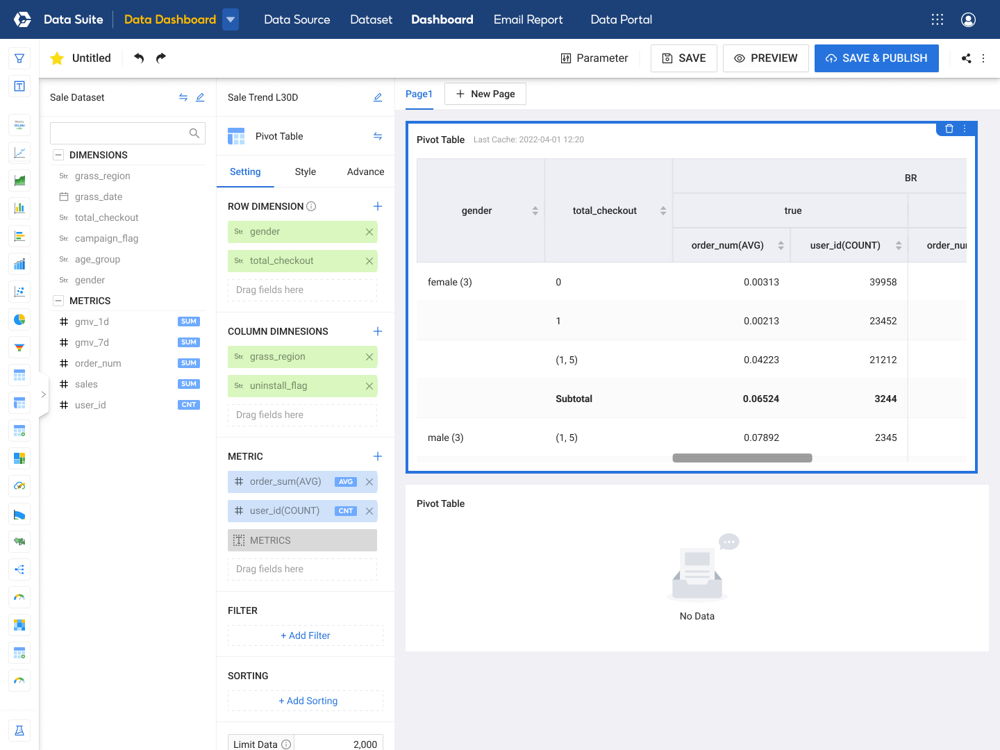

01 / 进入成熟平台
从具体工作，进入成熟平台。
接手 DataSuiteShopee Data Infrastructure（数据基础设施）建设的平台，覆盖数据接入、开发、调度、分析与治理。 时，平台已经有成体系的产品和界面，缺的是专业的设计支持。我的第一件事不是画页面，而是弄清每个人正在做什么：数据工程师在跑任务，分析人员在组织看板，业务用户要找到能用的数据，开发者通过接口调用数据能力。页面上的术语和操作，都长在这些人的日常里。
我从 DataGoDataSuite 的数据查询产品：用户在这里发现数据、理解模型、配置查询，并看到自己的访问权限。 这类关键产品切入：先把角色、权限、任务和跨产品关系摸清楚——谁在用、能取什么、卡在哪一步——再组织进界面。DataGo、Dashboard、Flink、Data Service 对应取数、看板编辑、执行追踪、接口测试四件事，下面按这个顺序展开。
这些设计发生在真实的存量条件下：Data Infrastructure 有自己的团队和优先级，不同产品保留着不同版本的组件和定制实现。
蓝色 ↗ 展开设计案例 灰色 平台其他产品
数据接入
不同源的数据进入目标存储
探索与开发
查询、脚本、管线与实时作业
运行保障
依赖、实例、质量、时效与灾备
资产与口径
发现、元数据、血缘与业务定义
数据消费
取数、看板、API 与 AI 分析等入口
专业数据形态
湖仓、图数据和日志等专业场景
组织、资源与访问
组织、团队、项目、资源与访问
治理与公共支撑
成本、协作与公共支撑
- 生产者视角
- 接入 → 开发 → 运行与质量保障。数据工程师关注任务、依赖、资源和运行实例；实时与批处理有不同运行逻辑。
- 消费者视角
- 发现与理解 → 获得访问 → 按任务使用。BI、分析人员、业务用户与应用开发者分别进入取数、看板或 API 等工作。
02 / 取数与权限
一次查询，要说清数据从哪里来、能取什么、怎样取。
进 DataGo 的核心工作在 Query ConsoleDataGo 的查询工作台：选模型、选输出列、设筛选、定排序与数量，一次查询拆成连续可检查的配置。 里完成：选模型、选输出列、设筛选、定排序和数量——一次查询拆成连续可检查的几步。下面按复杂度看几个关键页面。
Query Console 的四个关键页面

筛选区里有两类条件长得像，含义完全不同：一类是这次查询想取什么，一类是 Access Limit权限策略带来的访问限制：约束实际可取的数据范围，与本次查询的筛选条件是两回事。 允许取什么。我把它们分区——改筛选扩不了权限，这个边界要在界面上说清楚。
查询之前，先要知道数据从哪来。Model MarketDataGo 的数据模型市场：按业务分类查找数据模型，查看字段与访问范围。 找到合适的数据模型，再确认它有哪些字段、自己能访问哪些；My Access展示当前用户对某数据模型可访问的列与行范围。 列出行和列的范围——知道起点在哪，才知道能走到哪。
模型与访问范围

查询提交以后，事还没完。Job CenterDataGo 的查询任务中心：区分临时查询与定时查询；定时任务下展开每次执行的状态与时间。 分开临时查询和定时查询；长期的任务配置和某一次运行结果，不能混在一张列表里。
03 / 编辑与筛选
编辑看板时，要看得见配置与图表的对应关系。
DashboardDataSuite 内的看板产品：把数据组织成可阅读、可交互的图表与看板。 让分析人员把数据组织成看板。改一张图，是选字段、配维度、看画布结果来回交替的过程——改的是哪张图、配置改到了哪，必须对得上。我把图表工具、字段、配置面板和画布放进同一个编辑环境，当前选中的图和正在改的配置始终对应。

筛选器牵涉看板的使用方式：候选值从哪来、默认选什么、影响哪些图表。Inline Filter看板内联筛选器：配置控件、候选值来源与关联图表，明确筛选的作用范围。 的设置把控件、条件来源和 Linked ChartsInline Filter 设置中与筛选器关联的图表：明确筛选作用到哪些图、哪些字段。 分开表达。

控件放在什么位置，代替不了对作用范围的说明。关联到哪张图、哪个字段，配置的时候就要看清楚。
04 / 执行追踪
触发流水线之后，要追得到具体哪一步出了问题。
FlinkDataSuite 内的数据计算产品：通过 Pipeline 组织构建产物、应用与执行动作。 的 PipelineFlink 平台里的流水线：把构建产物、应用和执行动作连接起来。 把构建产物、应用和执行动作连起来。一次触发涉及多个 JARJava 应用的打包产物；Flink 任务由 JAR 生成、上传并执行。 和应用，整体状态解释不了执行情况——出了问题，要追得到具体哪一步。
运行态关系图与 JAR 过程
一条分支失败，要看得见失败发生在哪里，也要看得见同一轮里其他分支怎么样。记录上的 Done 可能带着失败节点——整体结束和全部成功，是两回事。
从哪里开始查，需要触发记录的入口；查到应用本身，还要环境、维度、当前实例和历史实例。执行记录、关系图、对象详情各自回答一层问题，又对得上同一项工作。
05 / 接口测试
从读懂接口，到知道怎样发起一次调用。
开发者用 Data ServiceDataSuite 内以 API 形式提供数据与服务能力的产品。 把数据能力当作 API 调用。测试之前，得先找到接口、读懂参数和返回结构。Service API 按服务组织接口，详情展开参数的类型、位置、必填项和嵌套关系。

API TestingData Service 的接口测试工作区：填写请求、查看响应、阅读调用文档在同一界面完成。 把填写请求、查看响应和阅读文档放在同一工作区。下面按复杂度看三个页面。
API Testing 的三个页面


入参默认 Key-Value，要看完整结构切到 JSON；请求设置与业务参数分开，右侧保留 SDKSoftware Development Kit，开发工具包：API Testing 右侧提供 SDK 与 cURL 调用示例。 和 cURL命令行 HTTP 请求工具；API Testing 右侧提供 cURL 调用示例。 文档。填的时候查用法，检查的时候对照返回，围绕当前接口就能连续做完。测试结果的范围也要说清楚：这版界面提示在线调试只返回前 100 行供参考——开发者既要知道怎么发出请求，也要知道眼前的结果能说明什么。
06 / 存量与接续
在存量条件下，把关键工作做成能接续的基础。
我先在重点产品里建立设计基础，随新需求逐步带入新的资产和做法，再让设计师带着业务理解接续。InfraD 提供了可复用的能力，但 DataSuite 最终没有完成全平台统一，部分存量页面继续沿用原有实现。对这类成熟平台，设计的价值要落在具体工作上：查询的人能理解权限，编辑看板的人能控制筛选范围，排查的人能找到失败步骤，调用接口的人能看懂请求和结果——这些关系理清楚，后续接手的设计师才有依据继续往下做。
相关文件涉及企业内部信息，可在面试交流中结合脱敏处理后的材料展开介绍。